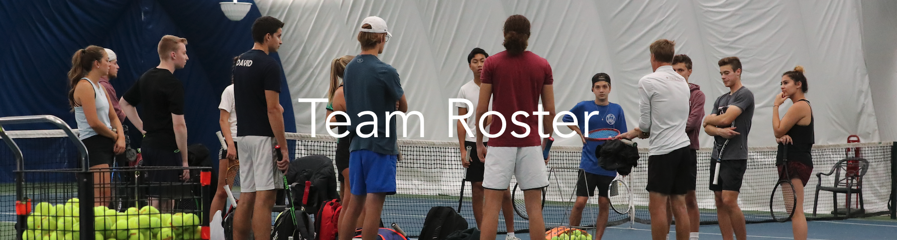

Division 1 Player Bios

Ryan Zanganeh
Ryan has been playing tennis since the age of 6. Most Valuable Player (MVP) of his high school tennis team, Ryan has one of the strongest two-handed backhands on the UOTC. He has trained and competed internationally, including at the Mouratoglou Tennis Academy; one of the best tennis academies in the world. Idolizing Roger Federer, he is best known for his passion towards the sport, fighter mentality, and aggressive play style on court. Ryan’s teammates feel his personality and style of play on court best resemble one of Italy’s best known tennis players; Fabio Fognini.

Sara Zeineddine
Sara started playing tennis at the age 7 & her love for tennis kept growing every year ever since. Serena Williams is one of her biggest inspirations. Sara has been competing since the age of 9, she mostly competed in ITF tournaments & national tournaments in Lebanon, DRC & Spain.. She is known to be very aggressive on court, but very friendly outside the court. Her teammates often compare her to Bianca Andreescu. She is very happy to be a part of the team & grateful to be able to play tennis while studying political science. Fun fact, Sara enjoys picnics at the park.

Luka David
Luka began playing tennis in Whitby, Ontario at the age of 13. Before high school, he moved to Windsor, Ontario and began to compete and practice in the United States. He achieved a top 20 ranking in South-East Michigan whilst competing in statewide tournaments in from Michigan, Ohio and Indiana. He represented his school at OFSSA and won the MVP award for his team. He enjoyed playing in Serbia over the summers, and making trips to South Carolina for tennis camps. His favourite player is Novak Djokovic, whom he met at the Western and Southern Open.
Fun Fact: He was given the nickname Wawrinka because of his one-handed backhand.

Miteau Butskhrikidze
Miteau started playing tennis at the age of ten at the Glen Cairn Tennis Club in Ottawa. He quickly fell in love with the sport and became a competitive player. At the age of 15, he received his coaching certification (with honours) and coached for five years at the Wychwood Tennis Club in Aylmer, Quebec. He was known there for his classic technique, mighty serve and, by his competitive students, for the grueling “Russian warm-ups” he occasionally imposed on them. Miteau is elated to play for the uOttawa Tennis Club while finishing a degree in political science and law (J.D.).

Jacob Leong
Our humble captain, Jacob is a 4th year student studying Biomedical sciences focusing on Neuroscience. He’s been playing since he was 5 and can be commonly seen out and about on the courts in Ottawa, either coaching or playing. He’s the coach of our division 2 and 3 teams and his backhand and return of serve are awe inspiring.

Mahmoud Shedid
Mahmoud, also known as Dada is a fourth year Finance student.Born and raised in Egypt , Dada was introduced to tennis at the age of 4. By the age of ten he was competing nationally at an individual level but also at club level where he competed for his club GSC in the league. His favourite shot by far would be his serve.

Nina Chen
Raised in Ottawa, Nina has played all the junior OTA tournaments based in the city from U10 to U18. Having trained at the local OAC, she developed a killer forehand and determined on-court mentality. Nina is in her fourth year studying biomedical science. Fun Fact: Nina will slide (and fall) on any court surface.

Céline Wan Min Kee
Born and raised in the island of Mauritius, Céline began playing tennis at the age of 8 years old and started competing in tournaments at 10. She was ranked number 2 in her category nationally and was part of the Mauritian Junior National tennis team. She has played in several ITF tournaments, and has also represented her country in international competitions such as the 39rd African Junior Championship and the 3rd African Youth Games. Céline is excited to be part of the team while currently being in her third year of Computer Science.

Francesca Nițică
Francesca began playing tennis recreationally at the age of 14, however after learning what the sport meant to her and discovering her passion for it, she decided to pursue it competitively. Her favourite WTA player is Aryna Sabalenka, whom she admires for her determination and playing style, which she considers to be similar to her own. Francesca's favourite shot is her serve, which is closely followed by her backhand. She enjoys coaching tennis to children in group lessons and summer camps. Francesca is thrilled to be a part of the team while pursuing her Mathematics degree.
Alexander Hnatovsky
Alexander was born in Canada, at the age of 6 he left down-under to Australia. There, he was introduced to a variety of new sports such as rugby, cricket but most importantly tennis. For the first couple of months post-introduction, he was mainly playing for fun with his school. Eventually his mother found him a coach at a nearby club. Alex began taking private lessons and slowly improved his game. At the age of 12 he moved back to Canada and continued to play here. By being involved in the tennis scene in Ottawa, Alex became familiar with most people from the UOTC and when he graduated highschool in 2020, they welcomed him with open arms. Due to Alex’s habit of constantly talking, he was offered the position of Marketing Executive. If he's not playing tennis, he's most likely pestering investors.
Connor Hickson
Connor is a 3rd year psychology student who has been playing competitive tennis since the age of 9 years old. He is very passionate about the sport and gives his all to win every point. He has competed with some of the best junior tennis players in the province and travelled lots to compete in tournaments. Connor has grown a lot through his journey as a tennis player and has learned many valuable lessons along the way. If he were to be known for something it would be for his defensiveness and consistency. His favourite shot in tennis is his backhand and specifically his backhand down the line.
Marian Tran
Born in Ottawa and raised ethnically Vietnamese, Marian started playing tennis at the age of 6. By the age of 10, Marian started to play in OTA tournaments from a provincial to national scale along with a few ITF tournaments. In 2019, she was ranked #110 in Canada for groups u18 and #76 for groups u16 at the age of 15. Taken aback from tennis for two years due to Covid, she is excited for a brand new start at uOttawa but most importantly, trying to enjoy the process along the way of her university career. She is currently in her first year studying Business Technology Management.
Mayssa Tebourbi
Mayssa is a third year computer engineer student. She was first introduced to tennis at the age of 9 and fell in love with it ever since. She has then been pursuing it on a competitive level since the age of 10, competing in Tunisia London and Lebanon. She is known by her aggressive court style and her killer forehand. Mayssa is the national tunisian tennis champion and got an ITF ranking. She shares her passion for tennis by coaching kids of different ages and is thrilled to be part of the team !
Bronwyn Thomson
Bronwyn is currently a Psychiatry Resident at the UOttawa. She started playing tennis as a tike at St. James Tennis Club in The Glebe. She began taking the sport more seriously in high school, when she began to dabble in some city and provincial tournaments. She took some time away tennis throughout her undergrad at Western and medical school at UOttawa but decided to take it up again as a resident. She has a true passion for the game, as the tennis court is where she is where she is best able to enter into the “flow” state.
Valeria Alfaro
Born in El Salvador, Valeria started to play tennis at age 5. At age 12 she moved to Oakville and played in high school and went to OFSAA. Valeria has always been really competitive and athletic, she also played squash, soccer and lacrosse during high school. Valeria is always striving to become the best she can and always gives her all when she plays. Valeria is currently in her second year of International Management and is also part of the uOttawa squash team.
Perihan Auf
Perihan started playing tennis at the age of 4 in Egypt and she’s been in love with the sport ever since. She has her ups and downs with it but she hasn’t given up. She started competing nationally at the age of 7 and internationally at the age of 14. She just moved to Canada last year for her undergraduate studies. She’s very excited and proud to be part of the team.
Kambel Fobissie
Kambel started playing tennis at the age of 4 in Cameroon located in Central Africa and he has always been passionate about the sport since then. His favourite player is Roger Federer and was always inspired by him. He has always strived to improve his game and he started playing tournaments by the age of 6. He moved to Canada almost four years ago and he is very delighted and happy to be a part of this amazing team. Kambel is in his second year of Software engineering.
Mathis Doyon
Mathis is a 1st year HK student who loves playing any sports, mainly Tennis. Mathis moved from Quebec to Mexico at the age of 8 years old and then Texas at the age of 11 until moving to Ottawa for University. Mathis started playing in Texas and mainly loves playing doubles. His favorite shot is his lefty serve and volleys.
Ivayla Raytcheva
Ivayla is a 3rd year student in Geography. Coached by her dad since the age of 5, she plays tennis weekly and participates in doubles tournaments every summer in Montreal. She is also introducing young kids to tennis and plans tennis events with a series of activities for communities in the South Shore. Her favourite shot is the backhand.
Ethan Leong
Ethan is a 2nd year HK student who enjoys playing tennis. His goal is to win a match at a tournament and is playing tennis every month to accomplish the goal. His favourite shot is his forehand volley.
Noor Nabaa
Noor is a 1st year biomed student. She started playing competitive tennis at the age of 9, after being introduced to the sport at the age of 5. She loves to share the love for the sport to young children, which led her to become a camp monitor at the Blackburn Tennis Club. Her favourite shot is her forehand.
Karishma Taneja
Karishma is a 3rd year psychiatry resident at uOttawa. She started playing tennis at 13, played through high school and part of university at Western. She took a break from the sport during medical school and has loved getting back into it on the uOttawa team! You can catch her with the snacks and the first aid kit.
Othman El Amrani
Othman is a 3rd year mechanical engineering student. He started tennis at the age of 5 with his dad. By the age of 8, he started competing nationally in Morocco and never stopped. He is thrilled to be part of the team and give everything on the court. His favourite shot is his volley.